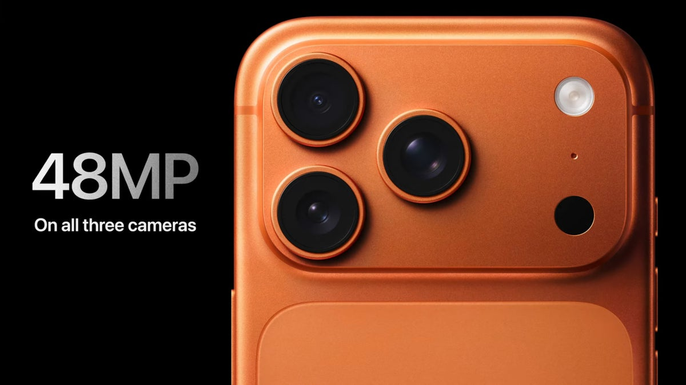

Smartphone
iPhone
Smartphone Apple cu sistem de operare iOS, cunoscut pentru performanță ridicată, securitate avansată și experiență de utilizare fluidă.
iPhone este ideal pentru utilizatori care apreciază calitatea camerei, actualizările software pe termen lung și integrarea cu alte produse Apple.
- Exemple: iPhone 12 / 13 / 14 / 15
- Puncte forte: cameră avansată, performanță ridicată, iOS stabil
- Actualizări regulate de securitate și funcționalitate
- Compatibilitate cu Apple Watch, AirPods, Mac și iPad
iPhone este potrivit atât pentru uz personal, cât și profesional, fiind unul dintre cele mai populare smartphone-uri din lume.